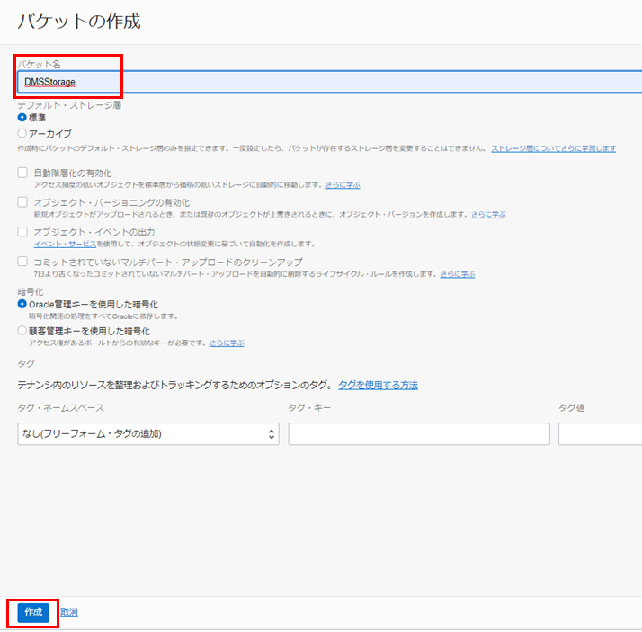
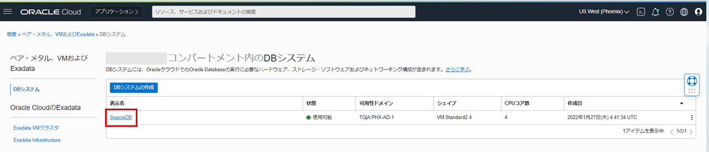
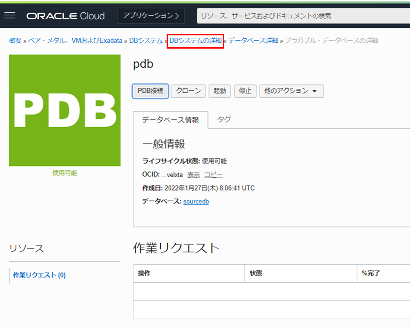
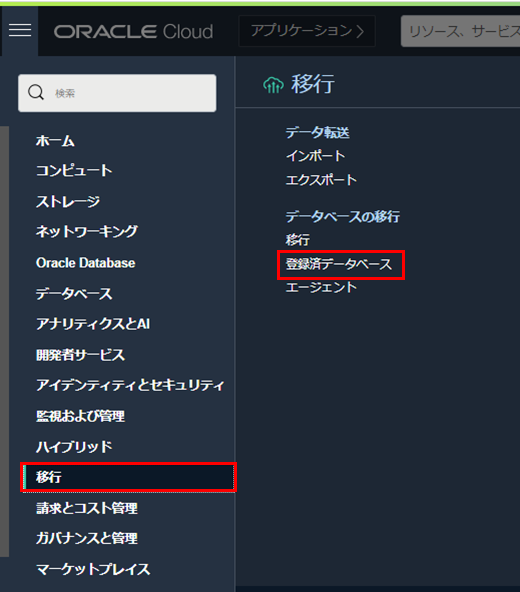
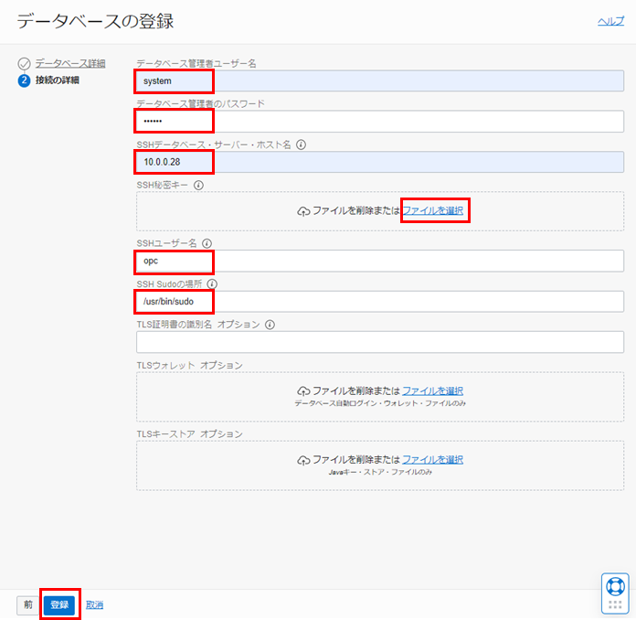

はじめに
Oracle Cloud Infrastructure Database Migration Service (DMS) は、オンプレミスまたはOCI上のOracle DatabaseからAutonomous Databaseに移行する際に利用できるマネージド・サービスです。エンタープライズ向けの強力なオラクル・ツール(Zero Downtime Migration、GoldenGate、Data Pump)をベースとしています。
DMSでは下記の2つの論理的移行が可能です。
- オフライン移行 - ソース・データベースのポイント・イン・タイム・コピーがターゲット・データベースに作成されます。移行中のソース・データベースへの変更はコピーされないため、移行中はアプリケーションをオフラインのままにする必要があります。
- オンライン移行 - ソース・データベースのポイント・イン・タイム・コピーがターゲット・データベースに作成されるのに加え、内部的にOracle GoldenGateによるレプリケーションを利用しているため、移行中のソース・データベースへの変更も全てコピーされます。そのため、アプリケーションをオンラインのまま移行を行うことが可能で、移行に伴うアプリケーションのダウンタイムを極小化することができます。
DMSに関するチュートリアルは304 : OCI Database Migration Serviceを使用したデータベース移行の前準備、305 : OCI Database Migration Serviceを使用したデータベースのオフライン移行、306 : OCI Database Migration Serviceを使用したデータベースのオンライン移行の計3章を含めた3部構成となっています。 DMSを使用してDBCSで作成したソース・データベースからADBのターゲット・データベースにデータ移行を行います。
305 : OCI Database Migration Serviceを使用したデータベースのオフライン移行または306 : OCI Database Migration Serviceを使用したデータベースのオンライン移行を実施する前に必ず304 : OCI Database Migration Serviceを使用したデータベース移行の前準備を実施するようにしてください。
この章では、DMSを使用したデータベース移行の前準備について紹介します。

目次 :
前提条件 :
- 「その2 - クラウドに仮想ネットワーク(VCN)を作る」を参考に、VCNが作成されていること。
- 「101: Oracle Cloud で Oracle Database を使おう(DBCS)」を参考に、DBCSでデータベースとスキーマの作成が完了していること。本チュートリアルではデータベース・バージョンは19.13.0.0.0を使用しています。また、DMSではSSH秘密鍵はRSA形式のみサポートしています。（OPENSSH形式は使用できません）
- 「101:ADBインスタンスを作成してみよう」を参考に、ADBの作成が完了していること。
- 「Oracle Cloud Infrastructure Database移行サービスの使用 - 2 Oracle Cloud Infrastructure Database移行の開始 - データベース移行ユーザーへの権限の付与」を参考に、データベース移行ユーザへ権限が付与されていること。権限が付与されていない場合、DMSの利用ができません。
所要時間 : 約40分
1. 環境のセットアップ
DMSの実行に必要なネットワークやストレージなどの環境のセットアップを行います。
1-1. 仮想クラウド・ネットワーク・サブネットのセキュリティ・リストの更新
-
OCIコンソール・メニューから ネットワーキング → 仮想クラウド・ネットワーク に移動し、前提条件で作成したVCNを選択します。

-
サブネット の一覧から Public Subnet-VCN名 を選択します。

-
セキュリティリスト の一覧から Default Security List for VCN名 を選択します。

-
イングレス・ルールの追加 を選択します。

- 以下のように設定します。その他の入力項目はデフォルトのままにします。
- ソースCIDR - 0.0.0.0/0
- 宛先ポート範囲 - 443
- イングレス・ルールの追加 をクリックします。

-
イングレス・ルールの追加 を選択します。
- 以下のように設定します。その他の入力項目はデフォルトのままにします。
- ソースCIDR - 10.0.0.0/16
- 宛先ポート範囲 - 1521
- イングレス・ルールの追加 をクリックします。


1-2. Vaultの作成
既にVaultが存在する場合、この項目は必要ないため次の項目へ進んでください。
-
OCIコンソール・メニューから アイデンティティとセキュリティ → ボールト に移動します。

-
画面左側にある コンパートメント の一覧から使用したいコンパートメントを選択します。
-
ボールトの作成 をクリックします。

-
ボールトの作成 ダイアログで、任意の名前を入力します。
-
ボールトの作成 をクリックしてダイアログを閉じます。

-
作成したボールトの状態が アクティブ になるまで待ちます。（5分ほどかかります。）

-
作成したボールトをクリックし、 マスター暗号化キー で キーの作成 をクリックします。

-
キーの作成 ダイアログで、任意の名前を入力します。
-
キーの作成 をクリックしてダイアログを閉じます。


1-3. オブジェクト・ストレージ・バケットの作成
移行で使用する空のオブジェクト・ストレージ・バケットを作成します。
-
OCIコンソール・メニューから ストレージ → オブジェクト・ストレージとアーカイブ・ストレージに移動します。

-
バケットの作成 をクリックします。

-
バケットの作成 ダイアログで バケット名 に任意の名前を入力します。
-
その他の設定項目はデフォルトのまま 作成 をクリックします。

2. ソース・データベースの設定
2-1. ソース・データベースのCDBとPDBの接続情報の確認
-
OCIコンソール・メニューから Oracle Database → ベア・メタル、VMおよびExadata を選択します。

-
ソース・データベース（前提条件で作成したDBCS）のDBシステム名をクリックします。

-
ソース・データベースのデータベース名をクリックします。

-
DB接続 をクリックします。

-
簡易接続 の接続文字列の右にある コピー をクリックし、メモ帳に貼り付けます。（後の手順で使用するため）
-
ダイアログを閉じます。

-
リソース の一覧から プラガブル・データベース をクリックします。

-
ソース・データベースのプラガブル・データベース名をクリックします。

-
PDB接続 をクリックします。

-
簡易接続 の接続文字列の右にあるコピーをクリックし、メモ帳に貼り付けます。（後の手順で使用するため）
-
ダイアログを閉じます。

-
DBシステムの詳細 をクリックします。

-
リソース の一覧から ノード をクリックします。

-
ソース・データベースのパブリックIPアドレス と プライベートIPアドレス をそれぞれコピーし、メモ帳に貼り付けます。（後の手順で使用するため）

2-2. データ・ポンプ・エクスポートで使用されるディレクトリの作成
移行の実行の際、初期ロードオプション として オブジェクト・ストレージ経由のデータポンプ を選択する場合、データ・ポンプは、エクスポートされたデータベースをオブジェクト・ストレージ・バケットに一時的に格納します。そこで使用するディレクトリを作成します。
-
ソース・データベースのDBシステムに対して、Tera Termなどのsshクライアントで接続します。
-
ユーザー・ボリュームに新しいディレクトリを作成します。
sudo su - oraclemkdir /u01/app/oracle/dumpdir
2-3. 初期化パラメータSTREAMS_POOL_SIZEの設定
sysユーザーでSQL*Plusに接続し、STREAMS_POOL_SIZEを2GBに変更します。
sqlplus / as sysdba
ALTER SYSTEM SET STREAMS_POOL_SIZE=2G SCOPE=BOTH;
exit;
3. データベースの登録
3-1. ソースCDBの登録
-
OCIコンソール・メニューから 移行 → 登録済データベース を選択します。

-
データベースの登録 をクリックします。

- データベース詳細 の各項目は以下のように設定します。その他の入力項目はデフォルトのままにします。
- 名前 - 任意
- ボールト - 登録したいボールトを選択します。
- 暗号化キー - 登録したい暗号化キーを選択します。
- データベース・タイプ - DBシステム・データベース（ベア・メタル、VMおよびExadata）を選択します。
- データベース・システム - 登録したいデータベース・システムを選択します。
- データベース - 登録したいデータベースを選択します。
- 接続文字列 - 2-1.ソース・データベースのCDBとPDBの接続情報の確認の5.でメモ帳にコピーした接続文字列のホスト名部分をデータベース・ノードのプライベートIPアドレスと入れ替えて入力します。例：10.0.0.28:1521/sourcedb_phx1rp.sub01270428300.vcndms.oraclevcn.com
- サブネット - データベースが配置されているサブネットを選択します。
設定後、次 をクリックします。

- 接続の詳細 の各項目は以下のように設定します。その他の入力項目はデフォルトのままにします。
- データベース管理者ユーザー名 - system
- データベース管理者のパスワード - ＜管理者パスワード＞
- SSHデータベース・サーバー・ホスト名 - ＜データベース・ノードのプライベートIPアドレス＞
- SSH秘密キー - 秘密鍵ファイルを選択（DMSではRSA形式のみサポート。OPENSSH形式は使用できません。）
- SSHユーザー名 - opc
- SSH Sudo - /usr/bin/sudo
設定後、登録 をクリックします。

3-2. ソースPDBの登録
-
OCIコンソール・メニューから 移行 → 登録済データベース を選択します。
-
データベースの登録 をクリックします。
- データベース詳細 の各項目は以下のように設定します。その他の入力項目はデフォルトのままにします。
- 名前 - 任意
- ボールト - 登録したいボールトを選択します。
- 暗号化キー - 登録したい暗号化キーを選択します。
- データベース・タイプ - DBシステム・データベース（ベア・メタル、VMおよびExadata）
- データベース・システム - 登録したいデータベース・システムを選択します。
- データベース - 登録したいデータベースを選択します。
- 接続文字列 - 本チュートリアルの2-1.ソース・データベースのCDBとPDBの接続情報の確認の10.でメモ帳にコピーした接続文字列のホスト名部分をデータベース・ノードのプライベートIPアドレスと入れ替えて入力します。例：10.0.0.28:1521/pdb.sub01270428300.vcndms.oraclevcn.com
- サブネット - データベースが配置されているサブネットを選択します。
設定後、次 をクリックします。

- 接続の詳細 の各項目は以下のように設定します。その他の入力項目はデフォルトのままにします。
- データベース管理者ユーザー名 - system
- データベース管理者のパスワード - ＜管理者パスワード＞
- SSHデータベース・サーバー・ホスト名 - ＜データベース・ノードのプライベートIPアドレス＞
- SSH秘密キー - 秘密鍵ファイルを選択（DMSではRSA形式のみサポート。OPENSSH形式は使用できません。）
- SSHユーザー名 - opc
- SSH Sudo - /usr/bin/sudo
設定後、登録 をクリックします。

3-3. ターゲットADBの登録
-
OCIコンソール・メニューから 移行 → 登録済データベース を選択します。
-
データベースの登録 をクリックします。
- データベース詳細 の各項目は以下のように設定します。その他の入力項目はデフォルトのままにします。
- 名前 - 任意
- ボールト - 登録したいボールトを選択します。
- 暗号化キー - 登録したい暗号化キーを選択します。
- データベース・タイプ - Autonomous Database
- データベース - 登録したいデータベースを選択します。
設定後、次 をクリックします。

- 接続の詳細 の各項目は以下のように設定します。その他の入力項目はデフォルトのままにします。
- データベース管理者ユーザー名 - admin
- データベース管理者のパスワード - ＜管理者パスワード＞
設定後、登録 をクリックします。

以上で DMSを使用したデータベース移行の前準備 は終了です。
オフライン移行を実行したい場合は、305 : OCI Database Migration Serviceを使用したデータベースのオフライン移行にお進みください。 オンライン移行を実行したい場合は、306 : OCI Database Migration Serviceを使用したデータベースのオンライン移行にお進みください。